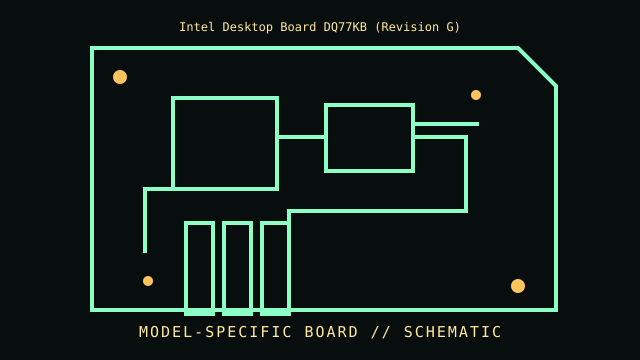

[ INDIVIDUAL COMPONENT // MOTHERBOARDS ]
Intel Desktop Board DQ77KB (Revision G)
LGA1155 / Intel Q77, 2012. This entry documents one exact board model/revision; its specifications are not interchangeable with similarly named variants.

REVISION WARNING: Confirm the PCB silk-screen, assembly/AA code and firmware ID on the actual board. Where documentation does not identify one PCB spin, this record states the exact documented model and explains the revision distinction below.
Specifications
| Exact model / revision | DQ77KB PCB revision G (confirm full revision/AA marking) |
|---|---|
| CPU / socket | LGA1155 2nd/3rd-generation Intel Core processors and compatible models per Intel board CPU list/BIOS |
| Chipset / platform | Intel Q77 Express chipset |
| Memory | Two DDR3 SO-DIMM sockets, dual-channel; supported capacity/speed and Ivy Bridge BIOS requirements per Intel specification |
| Form factor | Thin Mini-ITX (170 × 170 mm); external DC input design, verify the exact revision |
| I/O and expansion | Display outputs and internal eDP/LVDS options vary by board configuration; mini-PCIe/mSATA, SATA, USB, Gigabit LAN and front-panel headers |
| Firmware compatibility | Intel Visual BIOS/UEFI; firmware update may be needed for 3rd-generation processors; observe Intel recovery procedure |
Compatibility and revision pitfalls
DQ77KB is the thin Mini-ITX model, not desktop ATX Q77 boards. Revision/AA and processor-generation support must be checked against Intel documentation. Do not assume any 19 V adapter fits: voltage, polarity/current and DC connector requirements matter.
Socket fit alone is not proof of support. Confirm the manufacturer CPU support list, the board's minimum BIOS, memory population table, and exact chassis/power requirements before operation.
Preservation notes
Photograph revision/AA label and internal display connectors before installing in an AIO chassis; retain original DC-in harness, heatsink and eDP/LVDS cabling. Record BIOS settings and CMOS battery condition.
Record provenance, date/serial codes, board and firmware revision, known repairs and test conditions. Photograph labels and connectors before cleaning or component removal; retain original firmware and configuration data when possible.
Sources & further reading
- Intel Desktop Board DQ77KB Product Guide — archived original scanInternet Archive scan identified as Intel DQ77KB; model-specific product guide and compatibility documentation.
- Intel Desktop Board DQ77KB archive recordPreservation copy of the model-specific manual; verify current firmware from the matching board revision before use.
Manufacturer manuals, CPU lists and archived primary documents take precedence over reseller summaries. If an archived support page omits a revision-specific file, do not assume another revision's firmware is compatible.